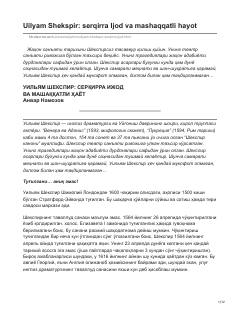

USBuyuk dramaturg Uilyam Shekspirning hayoti va ijodiy faoliyati haqida biografik ocherk.
Ushbu asar buyuk ingliz dramaturgi Uilyam Shekspirning hayoti va ijodiy yo'liga bag'ishlangan. Kitobda shoirning tug'ilishi, oilaviy sharoiti, ta'lim olishi hamda uning jahon adabiyoti rivojiga qo'shgan beqiyos hissasi haqida batafsil ma'lumotlar keltirilgan.